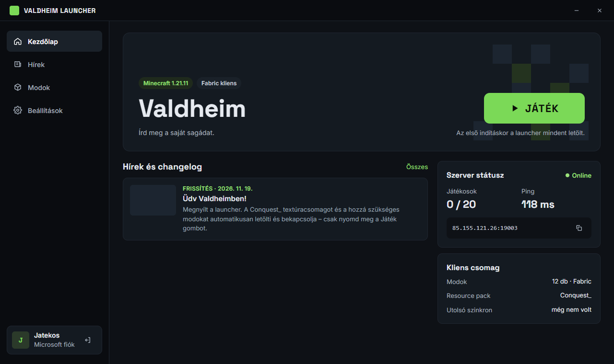
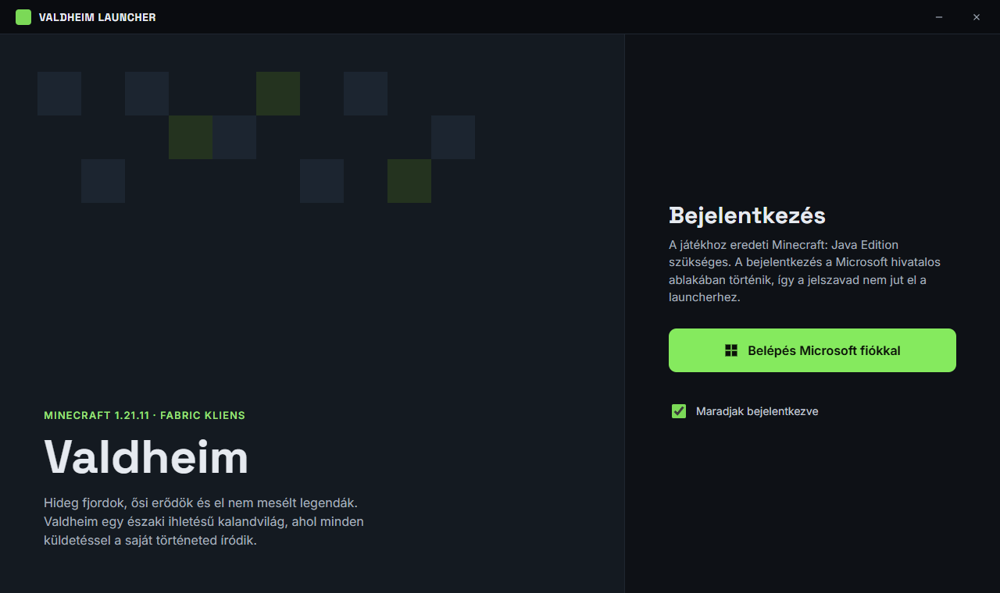
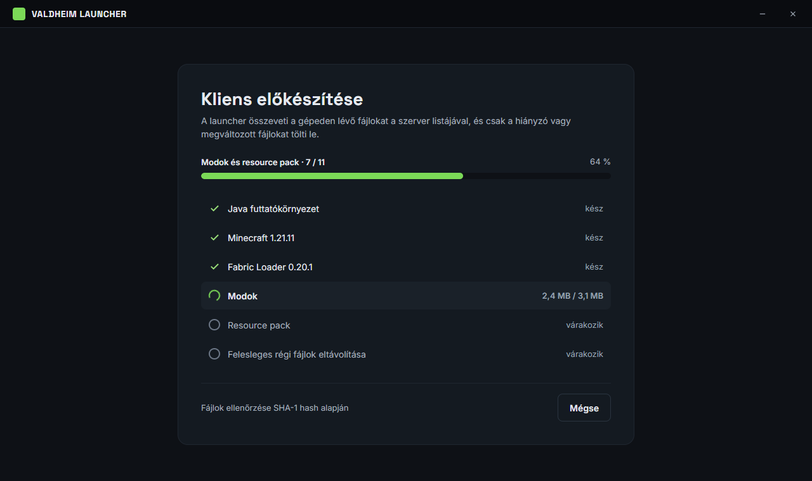
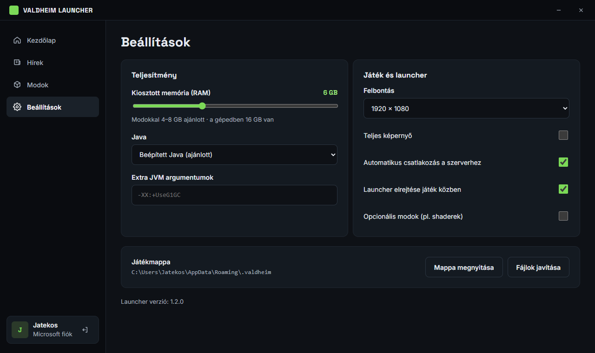
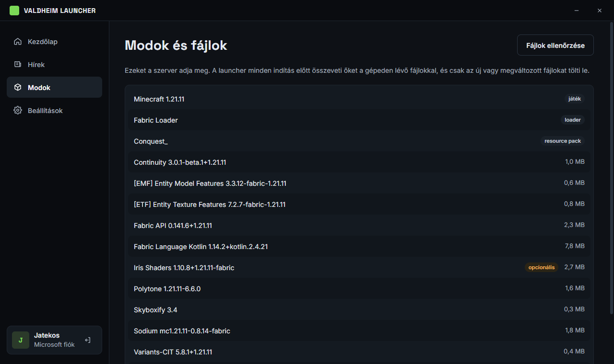

Textúracsomag előre bekapcsolva
A Conquest_ pack és a hozzá ajánlott modok automatikusan letöltődnek és bekapcsolnak. Nincs külön letöltés, nincs „resource pack” kérdés belépéskor.
Írd meg a saját sagádat.
Hideg fjordok, ősi erődök és el nem mesélt legendák. A launcherrel egy kattintás, és már bent is vagy – a Conquest_ textúracsomaggal és minden szükséges moddal együtt.
MIÉRT A LAUNCHER?
A Conquest_ pack és a hozzá ajánlott modok automatikusan letöltődnek és bekapcsolnak. Nincs külön letöltés, nincs „resource pack” kérdés belépéskor.
Minden indításkor ellenőrzi a fájlokat, és csak azt tölti le, ami változott. Ha a szerver modot cserél, nálad is kicserélődik.
A Microsoft saját bejelentkező ablakát használja, a jelszavad nem jut el a launcherhez. Eredeti Minecraft: Java Edition szükséges.
A „Játék” gomb elindítja a Minecraftot és rögtön csatlakozik. Ha nem sikerül, a játékon belül egy kattintással újrapróbálhatod.
Sodium a jobb FPS-ért, Zoomify a nagyításhoz (C gomb), és opcionálisan Iris shaderekhez – OptiFine nélkül.
Saját mappába telepít, a meglévő .minecraft mappádhoz, mentéseidhez és modjaidhoz nem nyúl. Java-t sem kell külön telepítened.
TELEPÍTÉS
Kattints a Letöltés gombra, majd nyisd meg a letöltött telepítőt.
A „Windows megvédte a számítógépet” ablakban kattints a További információ, majd a Futtatás mindenképp gombra. Miért?
Jelentkezz be a Microsoft fiókoddal, nyomd meg a Játék gombot. Az első indítás pár percig tart, mert letölti a játékot és a textúrákat.
KÉPEK





GYIK
A Windows SmartScreen minden olyan programra figyelmeztet, amelyhez nem tartozik drága, fizetős kódaláíró tanúsítvány, és amit még kevesen töltöttek le. Ez nem jelenti azt, hogy vírusos. Ha biztos akarsz lenni benne, hogy a fájl a miénk, ellenőrizd az ujjlenyomatát (lent).
Igen. A launcher a hivatalos Microsoft bejelentkezést használja, ezért egy olyan Microsoft fiók kell, amelyen megvan a Minecraft: Java Edition.
A launcher kb. 300 MB, a játék a Javával, a textúracsomaggal és a modokkal együtt további kb. 1–1,5 GB. A játékfájlok a %APPDATA% alatti külön mappába kerülnek, a meglévő .minecraft mappádat nem módosítja.
Igen, a játékmappa mods mappájába tett saját modokhoz a launcher nem nyúl. Csak arra figyelj, hogy Fabric 1.21.11 verziójúak legyenek.
A modok és a textúrák maguktól frissülnek. Ha a launchernek új verziója jön ki, töltsd le innen és telepítsd a régi fölé – a belépésed és a beállításaid megmaradnak.
Ilyenkor általában a Mojang szerverei korlátoznak, ha rövid idő alatt sokszor próbálkozol. Várj pár percet, majd a játékban a „Csatlakozás a szerverhez” gombbal próbáld újra – a játékot nem kell bezárni.
162A4F36DBA1858116ACF3EDB2CAD0BE68E1F36A3FCBB0D6500D1C3F92C44DEB
Ellenőrzés PowerShellben: Get-FileHash .\telepítő – a kiírt értéknek egyeznie kell ezzel.
v1.2.0 · 2026. november 19.